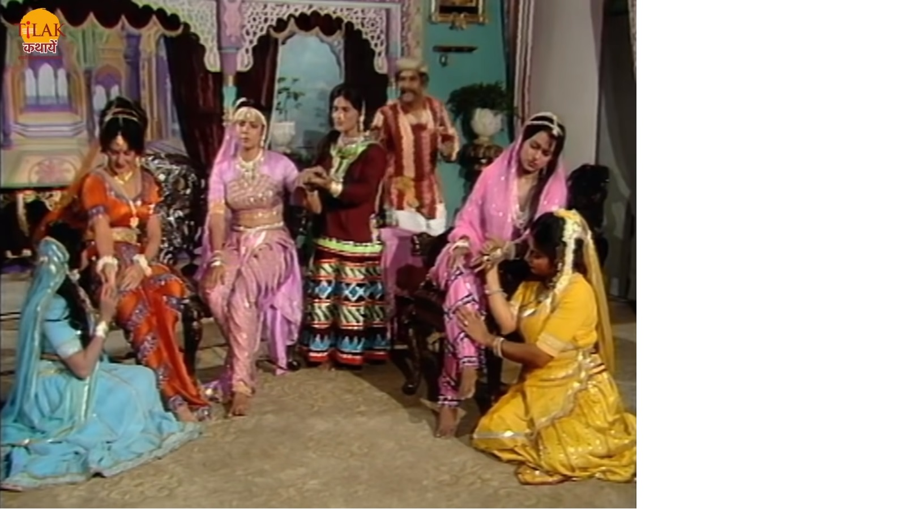
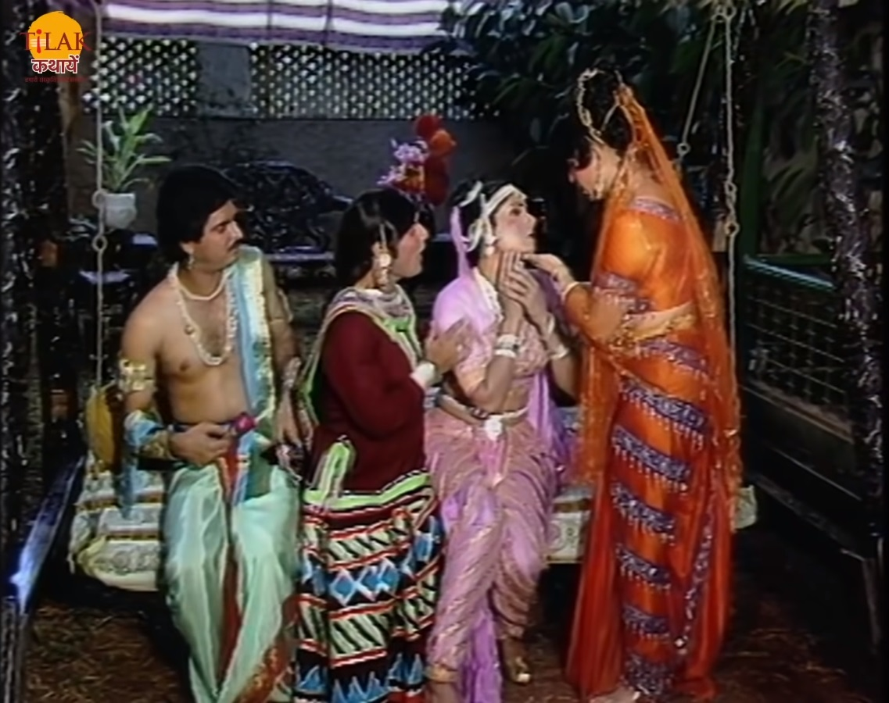
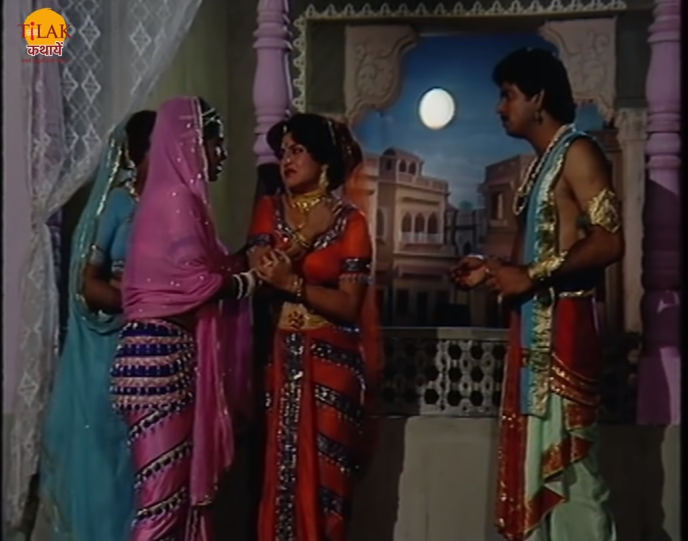
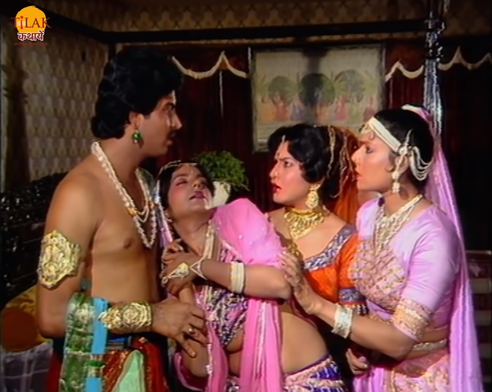

|  | बेताल को पकड़ने के लिए राजा विक्रम फिर से आता है और उसे पकड़ कर अपने साथ ले चलता है ताकि वो उस बेताल को साधु को सोंप सके। बेताल राज को कहता है की वो उस साधु की बातों में आकर बेताल को पकड़ कर ले तो जा रहा है लेकिन वो साधु बड़ा धूर्त है। बेताल विक्रम को रस्ते में एक और कहानी सुनता है। उज्जैनि नगर का राजकुमारजिसका नाम धर्मराज था वह एक व्यापारी के घर राशन लाने के लिए अपने सेवक को भेजता है। वह सेवक सेठ के घर जाता है तो वहाँ सेठ का मुनिम मिलता है वो उस राजा के सेवक को विश्राम करने कि एलिए कहता है और बताता है की अभी सेठ जी बाहर गए हैं मैं आपके लिए इतने सारा राशन निकल लेता हूँ। सेठ की तीन बेटियाँ थी इंदुलेखा, तारावली और मृगांगवती तीनों बहुत कोमल थी। उन तीनों की दासियाँ भी थी वो तीनों अपनी मल्किनों के बार में बात करती हैं की किसकी मालकिन सबसे अधिक कोमल है यह सब राजकुमार का सेवक भी सुन रहा था। राजकुमार का सेवक उनकी बातों में इतना खो जाता है की सारे राशन की मात्रा ऊपर नीचे कर देता है। |
| जब वह वापस सामान लेकर जाता है तो राजा के दरबारी राजा को बताते हैं की सारा समान ग़लत मात्रा में आ गया है। राजकुमार अपने सेवक से पूछता है की उसने ऐसी गलती कैसे कर दी तो सेवक राजकुमार को बताता है की दरसल कुछ दिनों से उसका ध्यान कोमलता के विषय में उलझा पड़ा है। राजकुमार का सेवक उस सारी बात बताता है की जिस सेठ के घर वो राशन लेने गया था उसकी तीन बेटियाँ हैं वो तीनों बहुत सुंदर हैं और बहुत ही कोमल है। राजकुमार सेवक की बात सुन कर उनकी लड़कियों से मिलने के लिए व्याकुल हो जाता है तो वह राजकुमार सेठ के घर ग़लत राशन भेजने के बहाने से सेठ के घर जाता है और वहाँ मुनिम से मिलकर राशन की बात पर नार्ज हो जाता है। मुनिम उनसे क्षमा माँगता है और विश्राम करने के लीय राजकुमार को विश्राम कक्ष में बैठता है। मुनिम सेठ की बेटियों के पास जकार उनसे कहता है की उन्हें उसकी राजकुमार कि सेवा करने में मदद करनी होगी तो इंदुलेखा राजकुमार के पास उनकी सेवा में जाती है। इंदुलेखा राजकुमार से प्रेम करने लगती है। राजकुमार इंदुलेखा को ख़यालों में खोते देख उसके गाल पर फूल फेंक देते हैं जिस से इंदुलेखा को चोट लगती है इंदुलेखा दर्द से रोने लगती है। राजकुमार इंदुलेखा से क्षमा माँगता है की उसके कारण उसे चोट लग गयी। |  | .
|  | रात्रि में राजकुमार को भोजन कराने के लिए तारावली आती है तो वह भी राजकुमार को देख कर उससे प्रेम कर बैठती है। राजकुमार तारावली को चाँदी रात में बाहर टहलने के लिए चलने के लिए कहता है तो तारावली उसे कहती है की वो चाँदनी में नहीं जा सकती उसे चाँदनी से तकलीफ़ होती है। लेकिन राजकुमार के ज़ोर देने पर तारावली बाहर आ जाती है। तारावली को चाँदनी से शरीर पर फफोले हो जाते हैं। राजकुमार ये सब देख कर हैरान हो जाता हैकी फूल लागने से ज़ख़्म हो जाता है और चाँदनी से त्वचा झुलस जाती है। |
| राजकुमार सोकर सुबह उठता है तो मुनिम उनके पास आकर कहता है उनका सारा सामान तैयार है उर मसले भी बांध दिए हैं तो राजकुमार मुनिम से कहता है की सारे मसाले पिसवा दीजिए इतने हम यही पर इंतज़ार करेंगे। मृगांगवती राजकुमार की सेवा में आती है और उनसे पूछती है की उन्हें रात्रि में नींद कैसी आयी और कैसे सपने आए तो राजकुमार उसकी बात सुनकर हंसने लगता है। मृगांगवती राजकुमार क्की हंसी सुनकर उन्हें कहती है की वो कृपा करके आराम से हंसे वो अधिक ध्वनि सहन नहीं कर पाती। तभी मुनिम मसाले पिसने शुरू कर देता है जिसकी आवाज़ से मृगांगवती बेहोश हो जाती है। राजकुमार यह देख कर भी हैरान हो जाता है। सेठ जी वापस लौट आते हैं और वो राजकुमार से क्षमा माँगते हैं की उनकी वजह से उन्हें ये सब कष्ट उठाना पड़ा। राजकुमार सेठ जी से कहता है की वो उनकी एक बेटी से शादी करना चाहता है तो सेठ उनसे यह पुछाता है की वो किस कन्या से शादी करना चाहते हैं तो राजकुमार कहता है की जो सबसे कोमल है। |  |
| Previous Story | Home | Next Story |